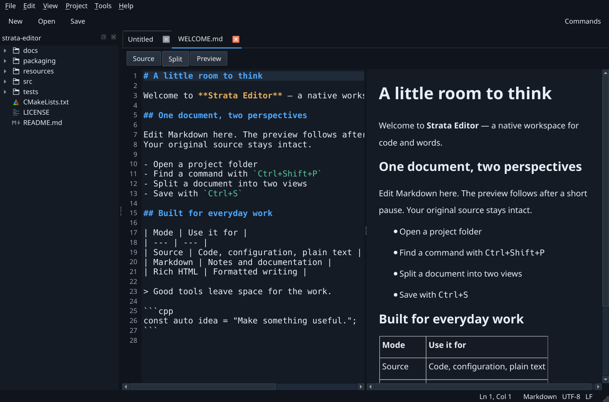
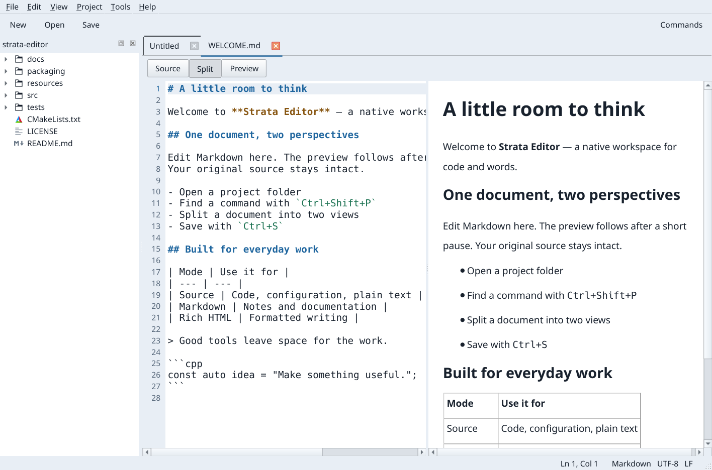

Text and code
Tabs, line numbers, lexical syntax highlighting, auto-indent, bracket pairing, comments and line commands. Split a document side by side or above and below.
Free and open source. Version 0.1.1 preview.
Edit text, source code, Markdown and formatted HTML in a native desktop app. Keep two views of a document open, see your Markdown as you write, and work without an account or cloud service.

Use the same native workspace for a source file, project documentation or a formatted document.
Tabs, line numbers, lexical syntax highlighting, auto-indent, bracket pairing, comments and line commands. Split a document side by side or above and below.
Switch between Source, Split and Preview. Read in a padded column, keep your original Markdown intact, and export HTML or PDF.
Write visually with headings, emphasis, fonts, colors, lists, links and tables. Formatting shares the document’s undo history.
Search commands, record keys or chords, and import or export shortcut JSON. Conflicts are checked before saved mappings take effect.
Browse files, filter the loaded project tree, find commands and search across project text. Optional Git actions and an external terminal stay within reach.
Atomic saves, external-change warnings and local recovery snapshots help keep track of your work. Reload after reviewing, or save your edits as a separate copy.
The editor has separate syntax palettes for both themes. Document position and encoding stay separate from temporary messages.

Default keys include Ctrl + P for Quick Open, Ctrl + Shift + P for commands, and Ctrl + H for Find and replace. Change registered bindings in Tools → Keyboard shortcuts….
Install the Linux amd64 preview through the signed APT repository or download a .deb from GitHub Releases. Source code and Windows CI build artifacts are also available.
| Platform | Validation and delivery |
|---|---|
| Linux | Local Debian x86_64 builds with Qt 6.11.2; X11/Xvfb screenshots and behavioral tests. Ubuntu 24.04 CI builds, tests, installs and packages the DEB. The APT package installs on both Ubuntu 24.04 and Debian forky/sid. |
| Windows x64 | MSVC 2022 and Qt 6.8.3 build/test CI, with a ZIP prepared by windeployqt. Manual desktop, printing and signed-installer validation remain pending. |
| macOS / Wayland | Not validated. Screen-reader and physical-printing checks also remain release work. |
The signed APT repository provides amd64 packages and updates through apt upgrade. Tested on Ubuntu 24.04 and Debian forky/sid; any Debian-based release with Qt 6.4+ packages should work. Use version 0.1.1 or newer.
sudo install -d -m 0755 /etc/apt/keyrings
curl -fsSL https://mikeholp87.github.io/apt/apt.asc | sudo tee /etc/apt/keyrings/mikeholp87-apt.asc >/dev/null
echo "deb [signed-by=/etc/apt/keyrings/mikeholp87-apt.asc] https://mikeholp87.github.io/apt/ ./" | sudo tee /etc/apt/sources.list.d/mikeholp87-apt.listsudo apt update && sudo apt install strata-editorOpen Strata Editor from the application menu or run strata-editor. strata-editor --version prints the installed version. Apt installs the required Qt libraries for you.
The key fingerprint should be E4C2 92E5 08CB 8700 6F7C 904E 7F08 D91D 3A1D 8F76.
gpg --show-keys --with-fingerprint /etc/apt/keyrings/mikeholp87-apt.ascUpdates arrive with your normal system upgrades. Settings, sessions and recovery files stay in ~/.local/share/StrataEditor/ until you delete them.
# update
sudo apt update && sudo apt upgrade
# remove the app
sudo apt remove strata-editor
# also remove the repository
sudo rm /etc/apt/sources.list.d/mikeholp87-apt.list /etc/apt/keyrings/mikeholp87-apt.ascDownload the .deb and SHA256SUMS from the release page, check the checksum, then install the file. A manually installed .deb does not update itself.
sha256sum -c SHA256SUMS --ignore-missing
sudo apt install ./strata-editor_<version>_amd64.debIf apt says libqt6gui6t64 ... is not installable, you are getting version 0.1.0, which named Qt packages that Debian does not have. Run sudo apt update and install again to get 0.1.1 or newer.
If strata-editor --version shows an older version after upgrading, an earlier manual copy such as ~/.local/bin/strata-editor comes first in your PATH. Check with type -a strata-editor.
You’ll need a C++20 compiler, CMake 3.22+ and Qt 6.4+ development packages. No Python or Node runtime is needed by the editor.
sudo apt update
sudo apt install build-essential cmake ninja-build qt6-base-dev git
git clone https://github.com/mikeholp87/strata-editor.git
cd strata-editor
cmake -S . -B build -G Ninja -DCMAKE_BUILD_TYPE=Release
cmake --build build --parallel
ctest --test-dir build --output-on-failure
./build/strata-editorOpen a project folder with ./build/strata-editor /path/to/project, or use the Project menu in an existing window. Use --no-session to start without restoring your workspace.
Use a Visual Studio 2022 developer PowerShell and a matching Qt 6 x64 installation. Replace the example Qt path with your own.
git clone https://github.com/mikeholp87/strata-editor.git
cd strata-editor
$strataQt = "C:/Qt/6.8.3/msvc2022_64"
$env:PATH = "$strataQt/bin;$env:PATH"
cmake -S . -B build -A x64 -DCMAKE_PREFIX_PATH="$strataQt"
cmake --build build --config Release --parallel
ctest --test-dir build -C Release --output-on-failure
.\build\Release\strata-editor.exeThe basics are implemented. Strata is still a preview, with explicit limits rather than a claim to replace every IDE feature.
Files over 8 MiB are refused. Quick Open uses the loaded explorer tree. Project search is literal, skips files over 2 MiB and stops at 1,000 matches. Regex replacements are literal text.
Highlighting is lexical. LSP, Tree-sitter, folding, multiple cursors, spellcheck and an embedded terminal are not implemented. Visual HTML uses Qt’s supported subset and may normalize unsupported markup.
Read the exact feature boundaries or follow the roadmap.
No. There is no telemetry, account or cloud service. Editing and preview rendering work offline, and document content cannot load remote images or resources. Optional Git and terminal actions use your system tools only when you request them.
Preferences use QSettings under StrataEditor/StrataEditor. Session and recovery files use the platform’s application-data directory, normally ~/.local/share/StrataEditor/strata-editor on Linux. Recovery files can contain unsaved document text. A single application instance owns this storage.
The editor keeps your buffer and displays a persistent warning. Saving over the changed file is blocked. Reload after reviewing, or save a separate copy; reloading unsaved edits asks before discarding them.
The preview handles everyday text, code and writing workflows. Language servers, parser-based highlighting, project-wide replacement and other advanced features remain on the roadmap. See the README for current capabilities and limitations.